리눅스마스터-2급 (2019-03-16 기출문제)
1과목: 리눅스 운영 및 관리
1. 다음은 /etc/fstab 파일 내용의 일부이다. ( 괄호 )안에 들어갈 내용으로 알맞은 것은?
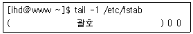
- /dev/sdb1 /backup ext4 defaults
- /backup /dev/sdb1 ext4 defaults
- /dev/sdb1 /backup defaults ext4
- /backup /dev/sdb1 defaults ext4
(정답률: 65%)

2. 다음 중 ext4 파일시스템을 생성하는 명령으로 알맞은 것은?
- mke2fs /dev/sdb1
- mke2fs -j /dev/sdb1
- mke2fs -t ext4 /dev/sdb1
- mke2fs -j ext4 /dev/sdb1
(정답률: 73%)
3. 다음 중 FAT-32 파일시스템을 마운트 할 때 지정하는 유형 값으로 알맞은 것은?
- fat
- vfat
- msdos
- fat32
(정답률: 63%)
4. 다음 중 분할된 파티션별로 디스크의 사용량을 확인할 때 이용하는 명령은?
- df
- du
- free
- fdisk
(정답률: 68%)
5. 다음 ㉠ 및 ㉡에 들어갈 내용으로 알맞은 것은?
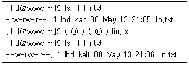
- ㉠ chmod ㉡ u+w
- ㉠ chown ㉡ u+w
- ㉠ chmod ㉡ u=w
- ㉠ chown ㉡ u-r
(정답률: 64%)
6. 다음 ( 괄호 ) 안에 들어갈 내용으로 알맞은 것은?
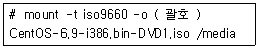
- lo
- ro
- iso
- loop
(정답률: 60%)
7. 다음 명령의 결과에 대한 설명으로 틀린 것은?
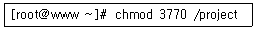
- /project 디렉터리에는 Set-UID가 설정된다.
- /project 디렉터리에는 Set-GID가 설정된다.
- /project 디렉터리에는 Sticky-Bit이 설정된다.
- /project 디렉터리는 공유 디렉터리 역할을 수행한다.
(정답률: 56%)
8. 다음 ( 괄호 ) 안에 들어갈 내용으로 알맞은 것은?
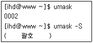
- u=r,g=,o=
- u=,g=,o=r
- u=rw,g=rw,o=r
- u=rwx,g=rwx,o=rx
(정답률: 73%)
9. 다음 중 디스크 파티션에 부여된 UUID의 값을 확인할 때 사용하는 명령은?
- uuid
- fdisk
- quota
- blkid
(정답률: 60%)
10. 다음 중 디스크 쿼터(Disk Quota)를 사용하는 경우로 가장 알맞은 것은?
- 사용자가 생성할 수 있는 최대 파일의 크기를 제한한다.
- 사용자가 생성할 수 있는 파일의 개수를 제한한다.
- 디스크에 분할할 수 있는 파티션의 개수를 제한한다.
- 특정 파티션에 생성할 수 있는 파일의 개수를 제한한다.
(정답률: 48%)
11. 다음 ㉠ 및 ㉡에 들어갈 내용으로 알맞은 것은?
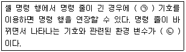
- ㉠ \ ㉡ PS1
- ㉠ ＞ ㉡ PS1
- ㉠ \ ㉡ PS2
- ㉠ ＞ ㉡ PS2
(정답률: 46%)
12. 다음 중 사용자가 로그인을 하여 현재 이용 중인 셸을 확인할 수 있는 명령으로 알맞은 것은?
- ps
- env
- set
- chsh
(정답률: 52%)
13. 다음 설명에 해당하는 셸로 알맞은 것은?
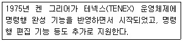
- bash
- csh
- tcsh
- ksh
(정답률: 66%)
14. 다음 중 로그인한 터미널 종류를 확인할 수 있는 환경변수는?
- TERM
- TERMINAL
- DISPLAY
- PROMPT
(정답률: 61%)
15. 다음 중 가장 마지막에 실행한 명령을 호출하여 다시 실행할 때 사용하는 조합으로 알맞은 것은?
- !1
- !!
- !?
- history 1
(정답률: 77%)
16. 다음 중 현재 설정된 전체 환경변수의 값을 확인할 때 사용하는 명령은?
- set
- env
- chsh
- export
(정답률: 72%)
17. 다음 중 배시셸 명령 행에서 aaa라고 입력하면 'ls -alF'라는 명령이 실행되도록 설정하는 방법으로 알맞은 것은?
- export aaa 'ls -alF'
- export aaa='ls -alF'
- alias aaa 'ls -alF'
- alias aaa='ls -alF'
(정답률: 78%)
18. 다음 중 사용 가능한 셸의 목록 정보를 확인할 수 있는 파일은?
- /etc/shell
- /etc/shells
- /etc/login
- /etc/logins
(정답률: 73%)
19. 다음과 같은 조건으로 cron을 이용해서 일정을 등록할 때 알맞은 것은?
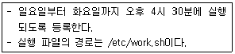
- 16 30 * * 0-2 /etc/work.sh
- 30 16 * * 0-2 /etc/work.sh
- 16 30 * * 1-3 /etc/work.sh
- 30 16 * * 1-3 /etc/work.sh
(정답률: 81%)
20. 다음 중 root 사용자가 ihduser가 등록한 cron 설정 파일을 삭제하는 명령으로 알맞은 것은?
- crontab -d -u ihduser
- crontab -r -u ihduser
- crontab -e -u ihduser
- crontab -l -u ihduser
(정답률: 62%)
21. 다음 중 cron을 이용해서 시스템 운영에 필요한 작업을 예약할 때 설정하는 파일명으로 알맞은 것은?
- /etc/cron
- /etc/cron.conf
- /etc/cron.d
- /etc/crontab
(정답률: 64%)
22. 다음 중 키보드 입력으로 발생하는 인터럽트 시그널의 번호로 틀린 것은?
- 1
- 2
- 3
- 20
(정답률: 50%)
23. 다음 설명에 해당하는 내용으로 알맞은 것은?
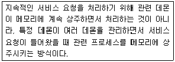
- exec
- fork
- inetd
- standalone
(정답률: 68%)
24. 다음 설명에 해당하는 내용으로 알맞은 것은?
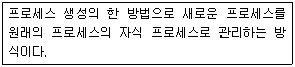
- exec
- fork
- inetd
- standalone
(정답률: 66%)
25. 다음 중 포어그라운드 프로세스를 백그라운드 프로세스로 전환할 때 사용하는 키 조합은?
- [ctrl]+[c]
- [ctrl]+[d]
- [ctrl]+[l]
- [ctrl]+[z]
(정답률: 72%)
26. 다음 중 특정 사용자가 백그라운드로 실행중인 프로세스를 확인할 때 사용하는 명령은?
- fg
- bg
- jobs
- exec
(정답률: 78%)
27. 다음 중 top 명령어의 기능에 대한 설명으로 틀린 것은?
- 동작 중인 프로세스를 종료시킨다.
- 동작 중인 프로세스의 우선순위를 변경한다.
- 동작 중인 프로세스의 메모리 사용률을 확인한다.
- 동작 중인 프로세스의 디스크 사용률을 확인한다.
(정답률: 47%)
28. 다음 중 ihduser 사용자의 모든 프로세스를 강제 종료하는 명령으로 알맞은 것은?
- kill -9 -u ihduser
- kill -15 -u ihduser
- killall -9 -u ihduser
- killall -15 -u ihduser
(정답률: 71%)
29. 다음 중 치환, 저장, 종료의 역할이 수행되는 vi 모드로 알맞은 것은?
- 명령모드
- 편집모드
- 입력모드
- ex명령모드
(정답률: 55%)
30. 다음 중 에디터에 대한 설명으로 틀린 것은?
- 텍스트 환경 기반의 대표적인 편집기는 vi, emacs, pico이다.
- pico는 최신 버전의 리눅스 배포 판에서 설치가 원활하게 되지 않는 문제점이 있다.
- vim은 패턴 검색 하이라이트 기능, 다중 되돌리기 기능, 문법검사 기능을 제공한다.
- emacs는 Editor Macros의 약어로 워싱턴 대학의 Aboil Kasar가 개발한 유닉스 기반의 텍스트 에디터이다.
(정답률: 68%)
31. 다음에서 설명하는 에디터로 알맞은 것은?
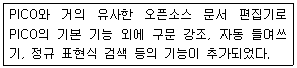
- vi
- vim
- nano
- emacs
(정답률: 74%)
32. vi 편집기로 /etc/hosts 파일 수정 중 시스템이 다운되어 재부팅이 되었다. 다음 중 수정 중이던 파일로 복구 할 수 있는 명령으로 알맞은 것은?
- vi -r
- vi -r /etc/hosts
- vi -r /etc/.hosts.swp
- vi -r ./etc/hosts.swp
(정답률: 48%)
33. 다음 중 emacs에디터의 키 조합 설명으로 틀린 것은?
- [Alt] + [d] : 커서가 위치한 부분부터 단어를 삭제
- [Alt] + [k] : 커서가 위치한 부분부터 문장 전체를 삭제
- [Ctrl] + [f] : 현재 커서가 위치한 줄의 화면 아래로 이동
- [Ctrl] + [a] : 현재 커서가 위치한 줄의 처음으로 커서를 이동
(정답률: 52%)
34. 다음 중 GUI기반으로 동작되는 에디터로 틀린 것은?
- pico
- gVim
- gedit
- XEmacs
(정답률: 66%)
35. 다음은 tar로 묶인 압축 파일을 특정 디렉터리에 푸는 과정이다. ㉠ 및 ㉡에 들어갈 내용으로 알맞은 것은?
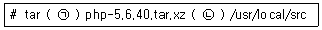
- ㉠ jxvf ㉡ -d
- ㉠ Jxvf ㉡ -d
- ㉠ jxvf ㉡ -c
- ㉠ Jxvf ㉡ -C
(정답률: 44%)
36. 다음 중 소스 파일을 이용한 설치 시 configure 단계에서 생성되는 파일은?
- make
- cmake
- Makefile
- configure.status
(정답률: 66%)
37. 다음 중 소스 파일을 이용해서 설치하는 방법이 나머지 셋과 다른 프로그램은?
- MySQL
- PHP
- SAMBA
- Apache HTTP
(정답률: 58%)
38. 다음 중 데비안 계열 리눅스에서 사용하는 패키지 관리 기법으로 가장 거리가 먼 것은?
- apt
- alien
- dselect
- zypper
(정답률: 72%)
39. 다음 중 yum 기반으로 설치된 totem이라는 패키지를 제거하는 명령으로 틀린 것은?
- yum delete totem
- yum remove totem
- yum erase totem
- rpm -e totem --nodeps
(정답률: 44%)
40. 다음 설명에 해당하는 프로그램으로 알맞은 것은?
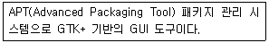
- dselect
- alien
- synaptic
- aptitude
(정답률: 44%)
41. 다음 명령의 결과에 대한 설명으로 알맞은 것은?
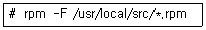
- 현재 시스템에 설치된 패키지만 찾아서 업데이트한다.
- 현재 시스템에 설치되지 않은 새로운 패키지만 찾아 설치한다.
- 현재 시스템에 설치 유무와 상관없이 모든 패키지를 강제로 설치한다.
- 모든 패키지를 설치한 후에 관련 패키지 파일을 모두 삭제한다.
(정답률: 48%)
42. 다음은 nautilus 패키지를 삭제하는 과정이다. ( 괄호 ) 안에 들어갈 내용으로 알맞은 것은?
- clean
- erase
- delete
- remove
(정답률: 60%)
43. 다음에서 설명하는 장치로 알맞은 것은?
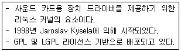
- API
- OSS
- SANE
- ALSA
(정답률: 70%)
44. 다음 중 프린트 관련 명령어로 틀린 것은?
- lpr
- lpc
- lprm
- lspci
(정답률: 82%)
45. ihd.txt인 문서를 lp라는 이름을 가진 프린터로 3장을 출력하려고 한다. 다음 중 ㉠, ㉡, ㉢, ㉣에 들어갈 내용이 알맞게 짝지어진 것은?
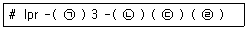
- ㉠ : # ㉡ : l ㉢ : ihd.txt ㉣ : lp
- ㉠ : T ㉡ : l ㉢ : ihd.txt ㉣ : lp
- ㉠ : # ㉡ : P ㉢ : lp ㉣ : ihd.txt
- ㉠ : T ㉡ : P ㉢ : lp ㉣ : ihd.txt
(정답률: 66%)
46. 다음 중 네트워크 프린트를 설정 할 수 없는 환경은?
- IPP 프로토콜 기반의 네트워크 프린트 설정
- LPD 프로토콜 기반의 네트워크 프린터 설정
- https 프로토콜 기반의 네트워크 프린터 설정
- SOAP 프로토콜 기반의 네트워크 프린터 설정
(정답률: 60%)
47. 다음 중 X-Window 환경에서 프린터를 설정하기 위한 명령으로 알맞은 것은?
- config-system-print
- system-config-print
- config-system-printer
- system-config-printer
(정답률: 59%)
48. 다음 중 ㉠ 및 ㉡에 들어갈 내용으로 알맞은 것은?
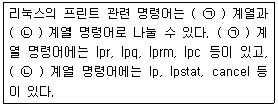
- ㉠ : Unix ㉡ : Linux
- ㉠ : Linux ㉡ : Unix
- ㉠ : System V ㉡ : BSD
- ㉠ : BSD ㉡ : System V
(정답률: 74%)
2과목: 리눅스 활용
49. 다음 중 현재 배포되고 있는 x.org의 버전으로 알맞은 것은?
- X10
- X11
- X12
- X13
(정답률: 66%)
50. 다음 중 X 윈도에 적용되는 라이선스로 알맞은 것은?
- MIT
- BSD
- GPL
- LGPL
(정답률: 49%)
51. 다음 중 GNOME 기반 응용 프로그램으로 틀린것은?
- konqueror
- nautilus
- totem
- evolution
(정답률: 48%)
52. 다음 ㉠ 및 ㉡에 들어갈 내용으로 알맞은 것은?
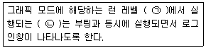
- ㉠ 3 ㉡ 윈도 매니저
- ㉠ 3 ㉡ 디스플레이 매니저
- ㉠ 5 ㉡ 윈도 매니저
- ㉠ 5 ㉡ 디스플레이 매니저
(정답률: 61%)
53. 다음 중 GNOME 3에서 사용되는 윈도 매니저로 알맞은 것은?
- mutter
- nautilus
- metacity
- konqueror
(정답률: 60%)
54. 다음 중 KDE와 가장 관련 있는 라이브러리로 알맞은 것은?
- Qt
- GTK+
- FLTK
- X Forms
(정답률: 65%)
55. 다음 중 LibreOffice 패키지에서 스프레드시트를 실행하는 명령으로 알맞은 것은?
- calc
- oocalc
- impress
- ooimpress
(정답률: 46%)
56. 다음 중 원격지에서 X 클라이언트를 이용하기 위한 설정을 IP 주소 기반으로 진행할 때 사용하는 조합으로 알맞은 것은?
- xhost, DISPLAY
- xhost, .Xauthority
- xauth, DISPLAY
- xauth, .Xauthority
(정답률: 57%)
57. 다음 중 OSI 7계층의 네트워크 계층과 관련된 프로토콜로 알맞은 것은?(오류 신고가 접수된 문제입니다. 반드시 정답과 해설을 확인하시기 바랍니다.)
- IP
- TCP
- UDP
- SSL
(정답률: 64%)
58. 다음 IPv4의 B 클래스 대역에 할당된 사설 IP 주소의 호스트 개수로 알맞은 것은? (문제 오류로 가답안 발표시 2번으로 발표되었지만 확정 답안 발표시 모두 정답처리 되었습니다. 여기서는 가답안인 2번을 누르면 정답 처리 됩니다.)
- 1
- 16
- 256
- 65536
(정답률: 65%)
59. 다음 중 국제 도메인 관리기구에서 초창기에 승인한 7개의 최상위 도메인으로 틀린 것은?
- edu
- gov
- int
- biz
(정답률: 58%)
60. 다음 중 3-way handshaking을 수행하는 프로토콜로 알맞은 것은?
- IP
- TCP
- UDP
- ICMP
(정답률: 70%)
61. 다음 중 장애 발생 시에도 다른 시스템에 영향이 적어 가장 신뢰성이 높은 네트워크 구성 방식으로 알맞은 것은?
- 링(Ring)형
- 망(Mesh)형
- 버스(Bus)형
- 스타(Star)형
(정답률: 74%)
62. 다음 설명에 해당하는 네트워크 기술로 알맞은 것은?
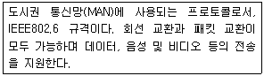
- ATM
- DQDB
- FDDI
- X.25
(정답률: 50%)
63. 다음 중 OSI 7계층의 표현 계층에 대한 설명으로 틀린 것은?
- 데이터의 암호화와 복호화를 수행한다.
- 데이터의 전송 순서 및 동기점 위치를 제공한다.
- 송신자와 수신자가 전송 데이터를 이해할 수 있도록 번역한다.
- 효율적인 전송을 위해 필요에 따라 압축과 압축해제를 수행한다.
(정답률: 64%)
64. 다음 설명에 해당하는 이더넷(Ethernet) 케이블로 가장 알맞은 것은?
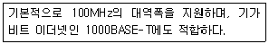
- Cat 3
- Cat 5
- Cat 5e
- Cat 7
(정답률: 59%)
65. 다음 중 OSI 7계층을 기준으로 하위 계층부터 전송 단위에 대한 순서로 알맞은 것은?
- bit-frame-packet
- bit-packet-frame
- packet-frame-bit
- frame-packet-bit
(정답률: 73%)
66. 다음 조건에 맞게 메일을 전송하는 명령으로 알맞은 것은?
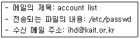
- mail -t “account list” ihd@kait.or.kr ＜ /etc/passwd
- mail -t “account list” /etc/passwd ＞ ihd@kait.or.kr
- mail -s “account list” ihd@kait.or.kr ＜ /etc/passwd
- mail -s “account list” /etc/passwd ＞ ihd@kait.or.kr
(정답률: 45%)
67. 다음 중 전통적인 시스템에서 FTP가 사용하는 2개의 포트에 대한 나열로 가장 알맞은 것은?
- ftp: 22, ftp-data: 21
- ftp: 21, ftp-data: 22
- ftp: 20, ftp-data: 21
- ftp: 21, ftp-data: 20
(정답률: 61%)
68. 다음 설명에 해당하는 인터넷 서비스로 알맞은 것은?
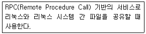
- IRC
- NFS
- SAMBA
- GOPHER
(정답률: 71%)
69. 원격지 서버에 현재 이용 중인 계정과 다른 계정인 lin으로 접속하려고 한다. 다음 ( 괄호 )안에 공통적으로 들어갈 수 있는 내용으로 알맞은 것은?
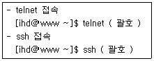
- lin@kait.or.kr
- -l lin kait.or.kr
- -u lin kait.or.kr
- -U lin kait.or.kr
(정답률: 49%)
70. 다음 중 FTP 서버에 있는 파일을 로컬 시스템으로 다운로드 할 때 사용하는 ftp 명령어로 알맞은 것은?
- get
- put
- lcd
- md
(정답률: 78%)
71. 다음 중 전자우편과 관련된 프로토콜로 가장 거리가 먼 것은?
- POP3
- IMAP
- SMTP
- NTP
(정답률: 79%)
72. 다음과 같은 조건일 때 할당되는 브로드캐스트 주소 값으로 알맞은 것은?
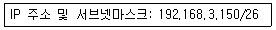
- 192.168.3.128
- 192.168.3.190
- 192.168.3.191
- 192.168.3.192
(정답률: 54%)
73. 다음 설명에 해당하는 파일로 알맞은 것은?
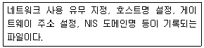
- /etc/hosts
- /etc/resolv.conf
- /etc/sysconfig/network
- /etc/sysconfig/network-scripts
(정답률: 48%)
74. 다음 중 로컬 네트워크 상에 있는 다른 호스트의 MAC 주소를 확인할 때 사용하는 명령으로 알맞은 것은?
- ip
- arp
- route
- ifconfig
(정답률: 67%)
75. 다음 설명과 같은 경우에 구축이 시급한 서버로 가장 알맞은 것은?
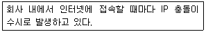
- PPP 서버
- SLIP 서버
- DHCP 서버
- Docker 서버
(정답률: 72%)
76. 다음 중 할당받은 C클래스 1개의 네트워크 주소 대역에서 서브넷마스크를 255.255.255.192로 설정했을 경우에 생성되는 서브네트워크의 개수로 알맞은 것은?
- 2
- 4
- 24
- 64
(정답률: 60%)
77. 다음 설명에 해당하는 기술로 가장 알맞은 것은?
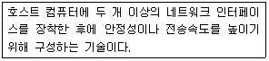
- 채널 본딩
- 사물 인터넷
- 클라우드 컴퓨팅
- 고가용성 클러스터
(정답률: 61%)
78. 다음 설명에 해당하는 기술로 가장 알맞은 것은?
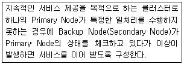
- 베어울프 클러스터
- 고가용성 클러스터
- 부하분산 클러스터
- 고계산용 클러스터
(정답률: 62%)
79. 다음 ㉠ 및 ㉡에 들어갈 내용으로 알맞은 것은?
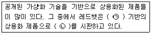
- ㉠ Xen ㉡ RHEV
- ㉠ KVM ㉡ RHEV
- ㉠ Xen ㉡ XenServer
- ㉠ KVM ㉡ VM Server
(정답률: 44%)
80. 다음 중 리눅스 커널 기반의 운영체제로 틀린 것은?
- QNX
- Tizen
- MeeGo
- Moblin
(정답률: 51%)